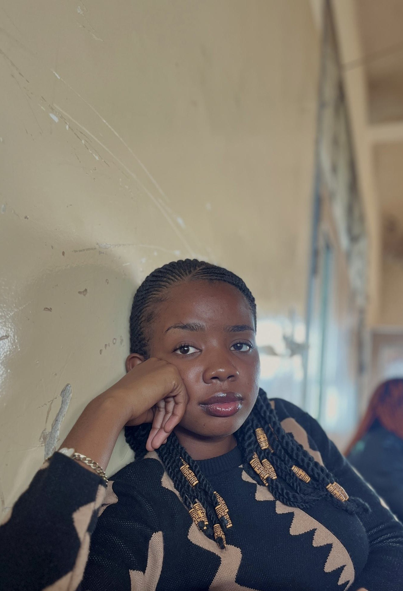

PORTRAIT DE DORCAS
Offert par Josue

💌 Déclaration de Josue à DORCAS
Ton navigateur ne supporte pas la vidéo.
📍 Lubumbashi — Destination : Lubumbashià Dorcas je voulais dire bonjour
📅 Date : 27/08/2025 à 00h